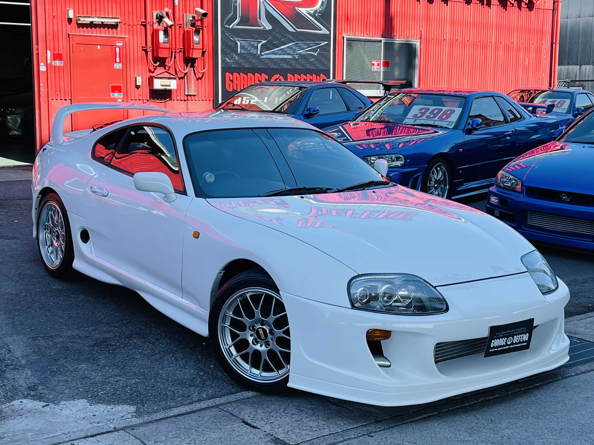
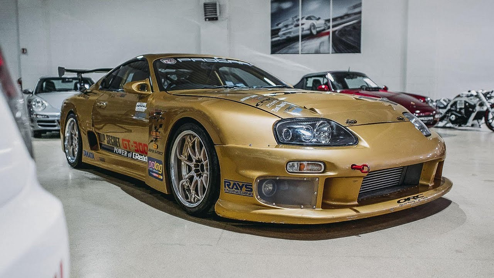

Supra MK4 A80 - "
Японцы Делают Вещи !
"
Узнайте все прелести Японских Легендарных Автомобилей !
Всё в мельчайших деталях от нашего Эксперта !
Контакты:
ВК (Кликабельно,Рандомный чел))
Официальный Сайт Supra Russia (Кликабельно)
DS: SupraBlog#1488 (НЕ Кликабельно)
GitHub (Кликабельно)
(Снизу предоставлены фотографии самого автомобиля)
 